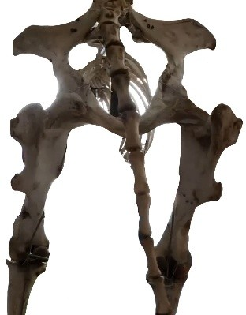

“What is a Snippy?” That curious question recently came from a well-known figure in the UFO/UAP world and, to our surprise, it rekindled the San Luis Valley’s most pivotal case — Snippy the Horse. The deeper we revisited the evidence, the more we realized how much has been muddled over the years. This article restores the essential facts and context behind one of the most important mutilation cases in history.
The Valley of Shadows
The San Luis Valley has long been a hotspot for high strangeness, but it wasn’t until the Snippy case — the first animal mutilation to gain worldwide attention — that its reputation was widely recognized. At the time, Agnes King lived on the King Ranch with her son Harry, and Nellie & Berle Lewis maintained a nearby cabin. Residents frequently reported unusual lights near Mount Blanca and beyond, sometimes describing humming sounds and objects moving in silence or at “impossible” speeds.
The Horses
In 1967, Snippy was a 3-year-old Appaloosa gelding associated with the Lewis family, spending time between the Lewis cabin and the King Ranch. The King Ranch pastured four horses: Smokey (black), Sheiba (sorrel), Lady (dapple grey), and Snippy (Appaloosa). Nearby Wellington Ranch (“Dead Cow Ranch”) had its own history of unusual animal deaths predating modern use of the term “mutilation.”
Confusion Over Identity
APRO files and later retellings sometimes conflated Snippy with Lady or misstated Snippy’s sex. Contemporary photos and the bones themselves resolved this: Snippy was male, a point confirmed by the skeletal hip structure and corroborating testimony from witnesses close to the case.
The Death of Smokey
Roughly a week before Snippy’s mutilation, Smokey was found dead near the same pasture. With no investigation, it was attributed to a rattlesnake bite — an explanation that doesn’t fit well for a horse his size without a neck or nose strike.
Discovery of Snippy
After a rain left fresh tracks, Harry King found Snippy about a quarter-mile from the ranch house. All flesh from the neck up was absent; the collar showed a clean, cauterized-like incision. An acrid, medicinal odor hung in the air. Over subsequent days, bone coloration shifted from pink to tar-black.
Forensic Findings
Dr. Altshuler of Alamosa examined the remains about a week later: vertebrae and skull cavity were dry; internal organs absent without blood; stomach contained a small white powder deposit; the right hind leg appeared broken as if dropped from height; the left hind was stripped to bone.

Environmental Anomalies
Investigators documented green ooze near the body, an odd “tool” coated with the same substance, scorch marks, clusters of cylindrical holes, paired heavy imprints, and three fence posts cut as if by extreme heat. APRO reported a 75-foot circle with five 15-foot circles around it; sand inside was smoothed, while outside showed rain divots — implying the objects were present during a shower.
Aftermath / Legacy
The case’s ripple effects spanned the Valley for years: bloodless carcasses, strange craft reports, humming, missing time, glowing orbs, and further odd encounters. The Snippy case became a template — and a warning — for how quickly facts can be lost without careful documentation.
Closing
For the full story, including original interviews and archival materials (APRO/NICAP S.O.R.T.), see Snippy: A King Family Legacy. This article preserves the essentials while encouraging deeper review of the primary records.